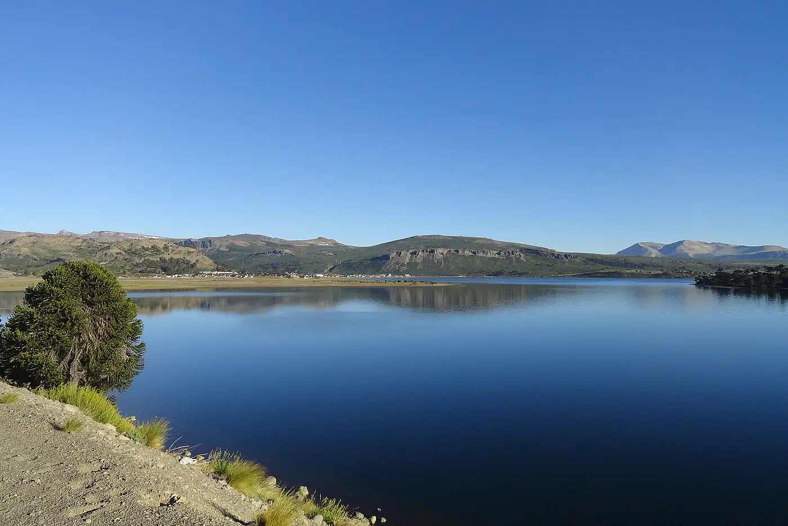

Lago Caviahue

1 / 4
Caviahue y alrededores · Verano
Kayak, paddle y caminatas por la costanera. La orilla está a pasos de Trawen y Los Basaltos.
La costanera permite conocer el paisaje del lago y recorrer el pueblo a pie. Trawen y Los Basaltos son dos de nuestras opciones de alojamiento cerca de la orilla.
Parque Náutico
En el lago también está nuestro Parque Náutico. Escribinos para conocer las actividades y la disponibilidad para tu visita.
Consultar por el Parque Náutico →Ubicación
Costanera del lago
Ver ubicación en Google MapsTu lugar en Caviahue
Departamentos, cabañas y hostal boutique para disfrutar de la Patagonia con tu familia, amigos o pareja.